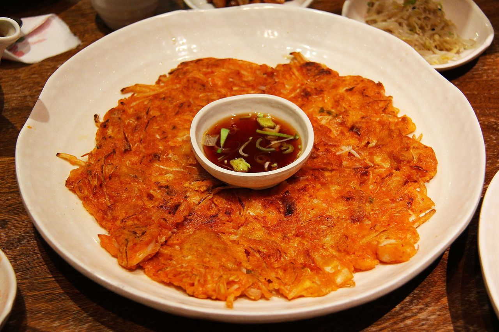

Kimchi Jun (Kimchi Pancake) and Dipping Sauce

Description
Kimchijeon, or kimchi jeon, is a type of Korean savory pancake that’s made with kimchi.It’s also called kimchi buchimgae.
Enjoy these deliciously crispy kimchi pancakes as a snack, appetizer, or a light meal!
A kimchi pancake is one of the easiest and quickest things to make and is one of Koreans’ all time favorite dishes
It is hot, spicy, crispy, a little sweet, sour, and a little salty.
It is not only a great snack but also it goes well with rice as a side dish, and is great in lunchboxes in place of plain kimchi.
Ingredients
- 1 cup kimchi, drained and chopped
- ½ cup reserved juice from kimchi
- 1 cup all-purpose flour
- 2 eggs
- 1 green onion, chopped
- 1 tablespoon vegetable oil
- salt to taste
- 1 tablespoon rice vinegar
- 1 tablespoon soy sauce
- ½ teaspoon sesame oil
- ½ teaspoon Korean chili pepper flakes (Optional)
- ½ teaspoon toasted sesame seeds (Optional)
Steps
- Stir together the kimchi, kimchi juice, flour, eggs, and green onion in a bowl.
- Heat vegetable oil over medium heat in a large skillet. Using about 1/4 cup of batter for each pancake, pour into skillet, spreading as thin as possible. Cook pancakes until set and lightly browned, turning once, 3 to 5 minutes per side. Season to taste with salt.
- Whisk together the rice vinegar, soy sauce, sesame oil, chili pepper flakes, and toasted sesame seeds. Serve with the pancakes.
For more details, click on this link!